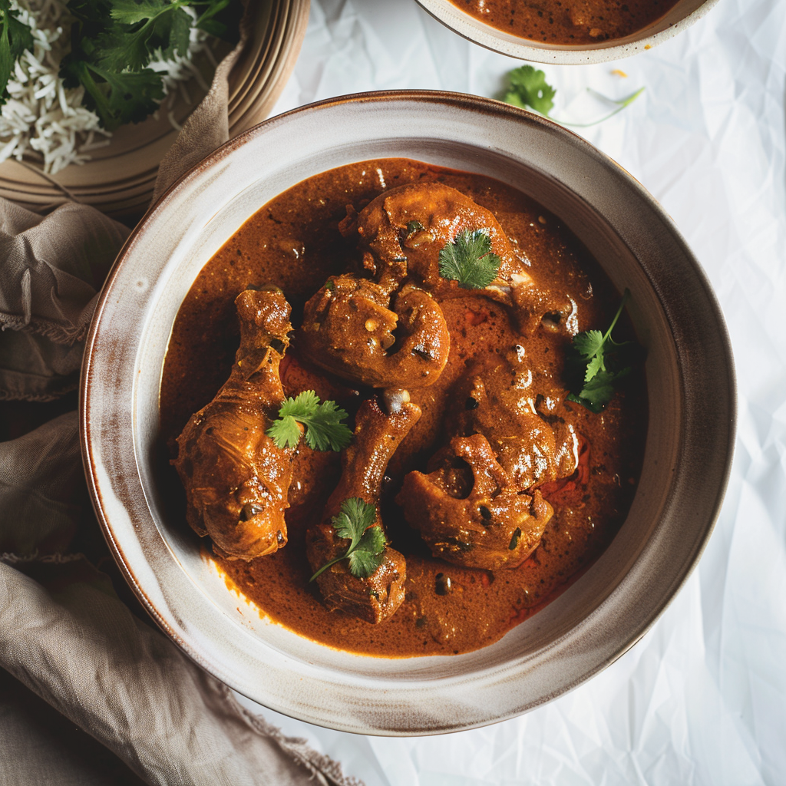

Chicken Lababdar
Rich and creamy chicken curry with a tomato‑cashew base and aromatic spices.
Ingredients
- 500 g chicken (boneless or with bone)
- 2 onions, sliced
- 3 tomatoes, pureed
- 10–12 cashews, soaked
- 2 tbsp cream
- Ginger‑garlic paste
- Red chili powder, garam masala, coriander powder
- Oil, butter, and salt
Step‑by‑Step Instructions
- Marinate chicken with salt, chili powder, and ginger‑garlic paste for 20 minutes.
- Sauté onions until golden, then blend with soaked cashews into a smooth paste.
- In a pan, cook tomato puree with spices until oil separates.
- Add onion‑cashew paste and cook for a few minutes.
- Add marinated chicken and cook until pieces are tender.
- Finish with cream and a knob of butter, simmer briefly, and serve hot.